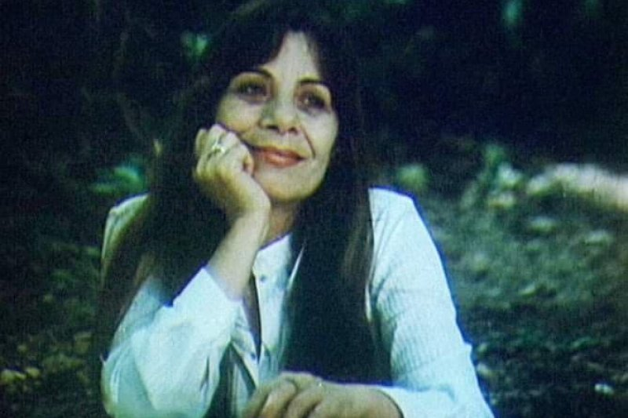
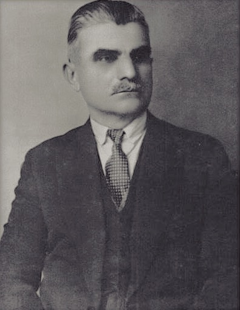
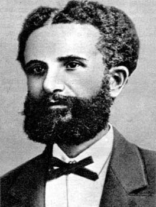
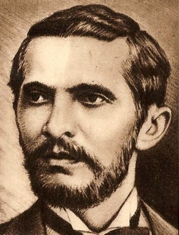
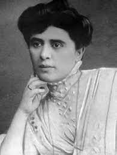
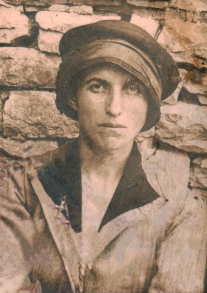
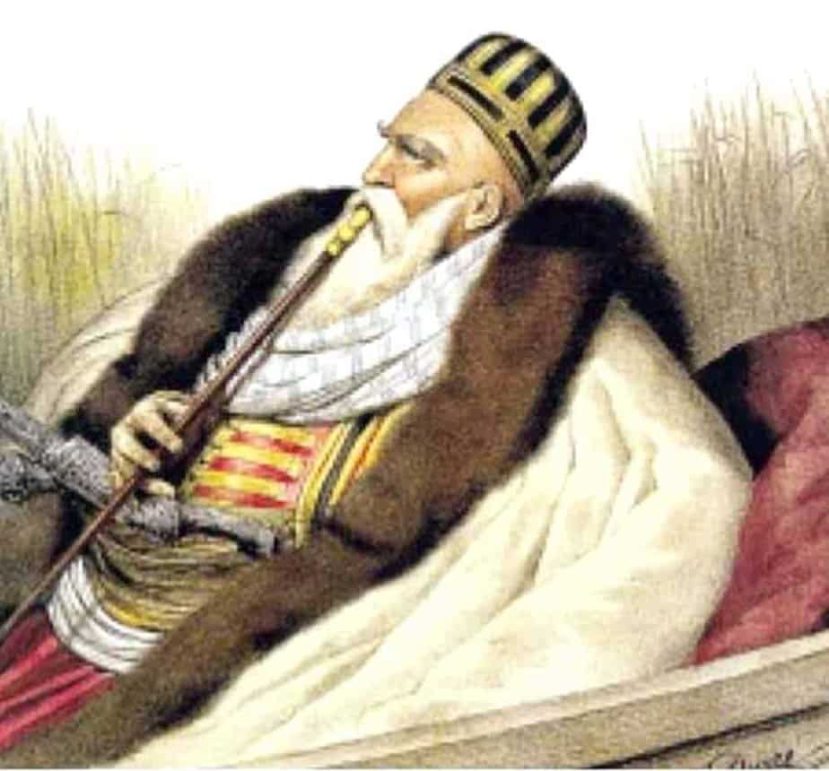
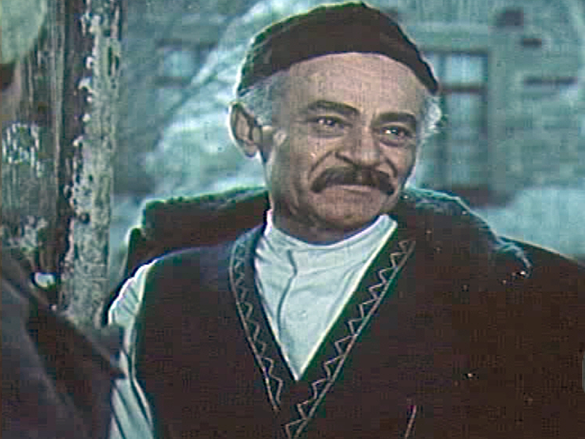
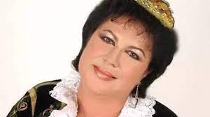
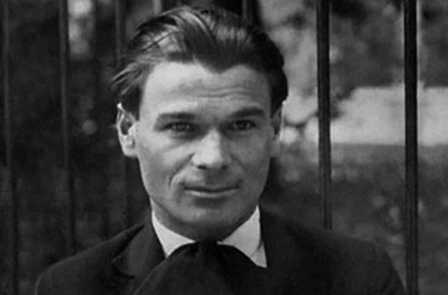

PERSONALITETE TË FAMSHËM NGA SHQIPËRIA E JUGUT DHE KONTRIBUTI I TYRE NË HISTORI
VAÇE ZELA

Vaçe Zela (7 prill 1939, Lushnjë - 6 shkurt 2014, Bazel) ishte një këngëtare ikonë e skenës shqiptare. Ajo e filloi karrierën e saj në moshë
të re dhe në vitin 1962 ishte e para që fitoi Festivalin e Këngës me këngën Fëmija i parë. Repertori i saj është shumë i pasur; numërohen me dhjetëra këngë popullore,
të lehta, kantata, balada, etj. Ajo ka një kontribut të rëndësishëm edhe në muzikën e filmit, ku ka interpretuar shumë këngë si pjesë e tyre. Fituese 12 herë e
festivalit, Vaçja fitoi famë gjatë epokës komuniste, ku iu dha titulli Artist i Merituar në vitin 1973 dhe Artist i Popullit në vitin 1977. Vaçe Zela është larguar
përfundimisht prej skenës në vitin 1992. Ajo është e vetmja femër shqiptare e nderuar në të gjallë me Urdhrin "Nderi i Kombit" më 24 dhjetor 2002 nga presidenti
Alfred Moisiu me arsyen: “Për vlerat e rralla si Artiste e Shquar, me popullaritet të jashtëzakonshëm, për interpretimin mjeshtëror të këngës së muzikës së lehtë dhe
asaj popullore, për pasurinë e vyer që krijoi në shkollën shqiptare të interpretimit muzikor.“ Për nder të këngëtares, viti 2009 u shpall nga Ministria e Turizmit,
Kulturës, Rinisë dhe Sporteve si “Viti Vaçe Zela”. Së fundi, edhe një rrugë në Tiranë mban emrin e saj.
ASDRENI

ASDRENI(Aleks Stavre Drenova (1824-1947). Poet i shquar, publicist dhe veprimtar demokrat. Eshte autor i Himnit te Flamurit. Me krijimtarine
e tij shenoi nje hap ne kalimin nga romantizmi te realizmi.
ABDYL FRASHËRI

Abdyl FRASHERI (1839 -1892) ka qenë patriot e demokrat i shquar dhe një nga udhëheqësit kryesorë të Lidhjes Shqiptare të Prizrenit. Lindi në
Frashër (Përmet) më 1839 në familjen e një spahiu të vogël të deklasuar. Pjesën e parë të jetës e kaloi në fshatin e lindjes. Në moshën 18 vjeçare u vendos për nevoja
pune në Janinë. U shqua si personalitet politik qysh më 1877. Në fund të këtij viti (1877), kur ishte deputet i Janinës në parlamentin e dytë osman, Abdyl Frashëri u
zgjodh kryetar i Komitetit Qendror për Mbrojtjen e të Drejtave të Kombësisë Shqiptare, që u formua në Stamboll.
NAIM FRASHËRI

Naim Frashëri 1846-1900. Poet i madh i Rilindjes Kombetare shqiptare, atdhetar, mendimtar dhe veprimtar i shquar i arsimit dhe i kultures.
Lindi ne Frasher te Permetit. U shkollua ne gjimnazin "Zosimea", ne Greqi. Poema e tij e pare ishte "Shqiperia", qe entuziazmoi patriotet shqiptare, botuar ne vitin
1897. Ne Stamboll ishte nder botuesit kryesore te revistes "Drita", me pas "Dituria", ku u botuan shume vjersha te tij, proza e vargje per shkollat shqipe. Me 1886
botoi poemen "Bageti e bujqesi". Veprat kryesore jane "Qerbelaja", "Historia e Skenderbeut", "Gjuha shqipe", "Korca" etj.
SEVASTI QIRIAZI

Sevasti Dako (lindur Qiriazi; Manastir, 24 shkurt 1871 - Tiranë, 30 gusht 1949) ka qenë atdhetare dhe nismëtare e organizimit të arsimit
shqiptar për femra. Që në moshën 4 vjeçare e dërguan te një shkollë greke dhe më pas te shkolla e Misionit Amerikan. Ajo qe e para grua shqiptare që studioi në këtë
institucion amerikan, të cilin e kreu në qershor 1891. Me t'u kthyer në Shqipëri ajo mori pjesë në ngritjen e shkollës së vashave në Korçë më 1891. Kjo shkollë është
edhe fillimi i një shkolle mbi bazën laike. Pas Luftës së Parë Botërore, e cila njihej ende me emrin e familjes Qiriazi. Ajo mori pjesë edhe në Kongresin e Manastirit,
ku u mor kryesisht me përgatitjen e teksteve shkollore. Është thënë se Sevastia ka botuar një gramatikë për shkollat fillore (Manastir 1912) dhe ka redaktuar një
radhë tekstesh historie. Shkollën e lartë e kreu në Stamboll dhe, pas kthimit në atdhe nisi të punojë për shkollën shqipe të vashave. Motrat Qiriazi ishin mësueset dhe
edukatoret e para të shkollës së vashave që u hap më 1891 në Korçë. Nga kjo shkollë dolën shumë emra të njohur të femrave të cilat kontribuan , jo vetem në fushën e
arsimit , por u bënë edhe luftëtare të njohura të cështjes kombëtare.U kthye në Shqipëri në fillim të viteve 1920. Ajo u bë një nga themelueset dhe drejtueset e
institucionit femëror të quajtur "Kyrias" (sipas emrit të familjes) në Tiranë dhe Kamëz, në bashkëpunim me motrën e saj Parashqevi, dhe të shoqin, Dako. Ajo dhe motra
e saj u burgosën dhe u internuan në kampin “Anhalteleger Dedinje” afër Beogradit nga njësitë pro-naziste të udhëhequra nga Xhaferr Deva për pikëpamjet e tyre
antifashiste gjatë Luftës së Dytë Botërore dhe u kthyen në Tiranë pas luftës. Familja e saj u persekutua goxha duke përfshirë kunaten e saj dhe dy djemte, të cilet u
arrestuan dhe u burgosën. E lodhur nga shumë mundimet në jetën e saj dhe goditje nga vdekja e djalit , Sevastia vdiq në gusht 1949. Por, gjatë kohës kur ishte gjallë,
kurrë nuk do të harrohen sakrificat e vyera që ajo na ka bërë. Mori pjesë në Kongresin e Elbasanit si dhe punoi në komisionin për shqyrtimin e teksteve shkollore të
ngritur nga shoqëria “Përparimi”. Ajo shkroi “Gramatika elementare për shkollat fillore”. Bashkëpunoi me atdhetarë dhe me Ismail Qemalin për çështjen kombëtare.
Kur ishte kryetare e partisë “Partia Kombëtare Shqiptare” në SH.B.A., mbrojti të drejtat e shqiptarëve në shumë forume ndërkombëtare. Duke iu përkushtuar përparimit
kombëtar dha ndihmesë në fushën e arsimit dhe emancipimit shoqëror të femrës shqiptare.
URANI RUMBO

Urani Rumbo, "Mësuese e Popullit", aktiviste e shquar për të drejtat e gruas shqiptare dhe dramaturge. U angazhua fuqishëm në promovimin e të
drejtave të grave shqiptare të asaj kohe. Ishte themeluese e Lidhjes së Gruas, njëra ndër organizatat e para të shquara të kësaj natyre në Shqipëri. Urani Rumbo, u
lind në Stegopul (Gjirokastër) në 1895, ku mori mësimet e para. Studimet i vazhdoi në Kurfuz, për letërsi. Në moshë shumë të re, si pesëmbëdhjetë vjeçare, ajo filloi
t`u mësonte njerëzve të afërt, shkronjat dhe alfabetin e gjuhës shqipe. Nga viti 1910, Urania ndoqi një shkollë të lartë në Janinë, por arsimimi i saj u ndërpre për
shkak të luftërave ballkanike. Gjatë luftës, si autodidakte, ajo mësoi italishten dhe frëngjishten. Në vitin 1916 ajo fillon punën si mësuese e gjuhës dhe letërsisë
shqipe në Dhoksat, një qytezë në Jug të Shqipërisë. Në vitet 1917 - 1918 e gjejmë si mësimdhënëse në Mingul dhe Nokovë të Luxhërisë. Pas Luftës së Parë Botërore shkon
në Gjirokastër ku themeloi shkollën femërore "Koto Hoxhi". Ditën e hapjes, ajo mbajti një fjalë tepër prekëse: “Gëzimi im më i madh është se vendosa në një bankë e
krah për krahë vajzën myslimane të Manalatit me atë të Varoshit si motra të pandara nga njëra-tjetra”. Fillimisht ajo caktohet mësuese e gjuhës shqipe në Dhoksat;
kështu ajo u rendit midis mësuesve më të nderuar lunxhiotë. Në vitet 1917-18 punon mësuese në Nokovë e Mingul. Që në moshë të re, bëhet anëtare e shoqërisë “Drita” të
Gjirokastrës, të formuar në 1908. Më vonë ajo formoi shoqatën “Motërmate” që kish qëllim bashkim-vëllazërimin e grave. Mendimet e saj përparimtare ajo i shfaqi në
organet e shtypit që dilnin në Gjirokastër e sidomos në gazetën Drita të themeluar në 1920, e të drejtuar nga Veli Harshova, e cila ishte gazeta e parë që griti lart
flamurin e lartësimit të gruas. Më 8 gusht 1920, me nismën e Uranisë e të patrioteve të tjera të shoqatës “Motërmate” organizohet në Gjirokastër e para mbledhje e
grave, të cilat kërkonin dritë, arsim e përparim. Urania më 20 nëntor 1920 harton një manifest në emër të grave gjirokastrite dhe e boton. Në të ngrihej problemi i
barazisë së burrit me gruan. Në disa raste ajo ka shkruar në shtypin e kohës edhe me pseudonimin “Trumpeta”, siç ishte rasti i një artikulli në ”Drita”, ku ajo ngrihet
ashpër kundër robërimit të gruas dhe e përfundoi artikullin me fjalët “Përpara ! Të përpiqemi të realizojmë përparimin!” Përpjekjet për përparimin e gruas po shkonin
mbarë dhe më 25 korrik 1924 organizon shoqërinë e grave të quajtur “Përmirësimi” ku edhe u zgjodh në krye të saj. Me këtë rast ajo përgatiti edhe një statut. Më pastaj
këtu u organizuan kurse arsimore për gratë e shtresave të ndryshme shoqërore. Mori pjesë aktive si anëtare e shoqërisë përparimtare “Drita” të Gjirokastrës". Me
riorganizimin e “Lidhjes së Mësuesve të Shkollave Fillore” në mars 1924, ajo ishte në komisionin nismëtar dhe u përpoq për mësimin laik, zhvillmin e teatrit, për
edukimin kombëtar të fëmijëve si dhe për t’i dhënë ngjyra kombëtare liceut francez të hapur në 1923. Pas disa kohësh nën presionin e kundërshtarëve konservatorë,
Urania u largua nga lidhja duke deklaruar se: “Meshëndeni, unë një grua e vetme jam midis jush.” Kundërshtarët donin që ajo të largohej nga Gjirokastra. Pas 18 vjet
pune në këtë shkollë ajo transferohet në Vlorë. Vdiq në Gjirokastër më 26 mars 1936, si një mësuese e dalluar, edukatore dhe veprimtare e shquar për emancipimin e
gruas shqiptare.
ALI PASHË TEPELENA

Ali Pashë Tepelena , sundimtar i fuqishem feudal ne Shqiperine Jugore. Themelues i Pashallekut autonom te Janines, kryengrites kunder
pushtetit te Portes Osmane ne Shqiperi. Lindi ne Tepelene ne nje familje feudalesh ushtarake dhe u dallua per aftesite e energjite, me te cilen ndoqi planet e veta
ambicioze per t'u bere sundimtar i vetem i vendit duke perdorur te gjitha mjetet. Me 1784 fitoi graden e "Pashait" si komandant ushtarak prane Valiut te Rumelise ne
Sofje. Politika e Ali Pashe Tepelenes synonte autonomine dhe bashkimin e krahinave shqiptare nen sundimin e pashallekut te Janines.
KADRI ROSHI

(Artistit i Popullit). Lindi ne 4 janar te vitit 1924 ne Mallakaster. Perfundoi studimet e larta ne Prage ne vitin 1941. Qe nga ajo kohe
dhe deri sot ai numeron 170 role te cilat perbejne nje jete te madhe artistike, ku nderthuren veshtiresite e nje jete prej jetimi, ciraku, portieri kinemaje dhe deri
te aktori origjinal me portretin e njeriut te fisem.Eshte konsideruar si legjenda e skenes dhe ekranit shqiptar.
IRINI QIRJAKO

Irini Qirjako është një këngëtare popullore e folkplorit shqiptar nga Finiqi. Ajo është një nga këngëtaret më të famshme popullore në jug të
Shqipërisë, e cila këndon më shumë këngë popullore toske dhe kryesisht potpuri të vetë-kompozuara. Ka mbaruar shkollën e mesme në Liceun Artistik dhe më pas vazhdoi
shkollën e lartë në Akademinë e Arteve. Ndër këngë të njohura përmendim:
- Ç'u mbush mali plot me rrush
- Do marr çiften
- Oj Zogo
LASGUSH PORADECI

(Llazar Gusho), 1900-1989. Poet lirik.Lindi ne Pogradec ne nje familje zanatcinjsh. Arsimin e kreu ne qytetin e lindjes, me pas u shkollua
ne Athine dhe Rumani dhe studimet i perfundoi ne Austri. Lirikat e tij dashurore, filozofike e atdhetare u permblodhen ne vellimet "Vallja e yjeve" (1933) dhe
"Ylli i zemres" (1937). Lasgush Poradeci ka perkthyer ne gjuhen shqipe vepra te poeteve te shquar botetore (Hajne, Majakovski, Pushkin, Gete).